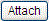

Approvals:Events
From Help wiki
Main Page → Fleet / Administration / Approvals →
Header → Search |
Approval | Contract | Maintenance | Vehicle | Events →  Approvals Setup
Approvals Setup
Contents |
[edit]
Overview
This Events screen is a reference from the entries made into the Contracts/Events screen. This is a read only screen, however, a contract event report can be produced from here. Any management of contract events, need to be completed from within the Contracts Module.
[edit]
Field Descriptions
| Screen Name | Type | Description | [table]field |
|---|---|---|---|
| # | Check Box | When ticked an event can be edited or deleted | |
| Type | List | List of event types. This list is compiled from classes which are ticked as 'events' | [gl_posting_classes]event_flag |
| Date | Date | Effective Event date - default date being system date on creation, but can be overwritten. Blank acceptable if date is unknown, e.g. if a contract has no start date yet | [fm_contract_events]event_date |
| Value | Text (40) | Free text for most classes. Drivers must be a valid driver and can be searched for. LOG entries display a selection of either 'Business' or 'Personal'. This column heading changes to suit particular events, 'Value' by default but 'Driver Name' e.g. for driver changes | [fm_contract_events]event_value |
| Description | Text | Unlimited Text. You can put as much text on the screen as you like. If the text is longer than the field length on the screen, you will see an ellipsis (...) to indicate that there is more text. If you hover over the text, a "tooltip" will appear and display the full text on screen. However, in the PDF Event reports, the text is chopped. | [fm_contract_events]description |
| Odo/Amt | Num | Amount field to record odometer readings or values, e.g. demerit points for infringements | [fm_contract_events]event_amount |
| File | Once an attachment is stored against the event, using the  key, a paperclip icon will appear. When the icon is clicked, the attachment will open. | ||
| Action | List | List of Action types | [fm_contract_events]contract_event_action_id |
| Due Date | Date | Enter the date the event is required to be Completed by. Can be entered manually or by selecting the date picker available when in 'edit' mode | [fm_contract_events]due_date |
| Completed | Check Box | This will be checked on by default. If the event requires attention by a due date, uncheck the box for it to be available in the KPIs on the Home screen for follow up. | [fm_contract_events]completed_flag |
| Last Edit | Date/time | System generated timestamp | [fm_contract_events]last_edit |
| User | Text | User login of last edit. | [fm_contract_events]user_id |
[edit]
Action buttons
| Field | Description |
|---|---|
| Select 'Print' to produce the contract event report listed against the specified contract. The output can be either PDF of .csv. |
[edit]
System Notes
- 7058: Approvals mirror screens not fully operational. Live dd/06/2013
- 7936: Client approval restrictions by supplier and class. Live xx/05/2016

{kind=link}